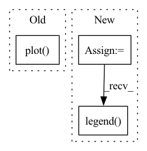

Pattern ID :34144

Before Change
loss_labels = prec_labels
ax0.plot(x_epoch, train_loss, "bo-", label=loss_labels[0] + ": {:.3f}".format(train_loss[-1]))
ax1.plot(x_epoch, train_prec, "bo-", label=prec_labels[0] + ": {:.3f}".format(train_prec[-1]))
ax0.plot(x_epoch, og_test_loss, "ro-", label=loss_labels[1] + ": {:.3f}".format(og_test_loss[-1]))
ax1.plot(x_epoch, og_test_prec, "ro-", label=prec_labels[1] + ": {:.3f}".format(og_test_prec[-1]))
if masked_test_loss is not None:
ax0.plot(x_epoch, masked_test_loss, "go-", label=loss_labels[2] + ": {:.3f}".format(masked_test_loss[-1]))
if masked_test_prec is not None:
After Change
ax1.legend()
ax2.legend()
if test_moda is not None:
ax3 = fig.add_subplot(133, title="moda")
ax3.plot(x_epoch, test_moda, "ro-", label="test" + ": {:.3f}".format(test_prec[-1]))
ax3.legend()
fig.savefig(path)
plt.close(fig)
In pattern: SUPERPATTERN
Frequency: 3
Non-data size: 3
Instances
Fragment ID: 97532912
Project Name: hou-yz/mvdet
Commit Name: 21b73128c100196443d134a8dcafbea96c3e842b
Time: 2020-02-06
Author: hou_yz@outlook.com
File Name: multiview_detector/utils/draw_curve.py
M Class Name: AnonimousClass
N Class Name: AnonimousClass
M Method Name: draw_curve(7)
N Method Name: draw_curve(10)
M Parent Class:
N Parent Class:
M File Name: multiview_detector/utils/draw_curve.py
N File Name: multiview_detector/utils/draw_curve.py
M Start Line: 8
M End Line: 25
N Start Line: 8
N End Line: 21
'>
Before Change
plt.plot(ty, y, c="k")
plt.plot(tx[:see], y[:see])
plt.plot(tx[see : see + pred], yhat[see : see + pred])
plt.ylim(-2, 2)
plt.show()
After Change
smoothness=0.75,
)
fig = plt.figure(figsize=(8.0, 8.0))
grid = ImageGrid(
fig=fig,
rect=111,
nrows_ncols=(8, 8),
axes_pad=0.05,
share_all=True,
label_mode="1",
)
grid[0].get_yaxis().set_ticks([])
grid[0].get_xaxis().set_ticks([])
// horizon = net.forecast_steps
horizon = 128
see = 250 // net.receptive_field
for ax, s in zip(grid, dataset):
x, y, tx, ty = s["x"], s["y"], s["tx"], s["ty"]
// Assert no data leakage
// print(net(y[:201].unsqueeze(0).unsqueeze(0))[0, 0, 200])
// print(net(y.unsqueeze(0).unsqueeze(0))[0, 0, 200])
// see = np.random.randint(0, 300)
ax.plot(ty, y, c="k", linestyle="--", linewidth=0.5)
ax.plot(tx[:see], x[:see], c="k", linewidth=0.5)
for p, label in preds:
yhat = p.predict(x[:see], horizon)
ax.plot(tx[see : see + horizon], yhat, label=label)
ax.set_ylim(-2, 2)
handles, labels = ax.get_legend_handles_labels()
fig.legend(handles, labels, loc="upper center")
plt.show()
// pred = 250
'>
Fragment ID: 97532915
Project Name: cheind/autoregressive
Commit Name: 320dbcc72842b652d319f9fcdec663d2073d285c
Time: 2021-10-18
Author: cheind@profactor.at
File Name: autoregressive/model.py
M Class Name: AnonimousClass
N Class Name: AnonimousClass
M Method Name: eval(1)
N Method Name: eval(1)
M Parent Class:
N Parent Class:
M File Name: autoregressive/model.py
N File Name: autoregressive/model.py
M Start Line: 147
M End Line: 203
N Start Line: 199
N End Line: 246
'>
Before Change
ax1.legend(["Training", "Validation"])
ax2 = plt.subplot(1, 2, 2)
ax2.plot(np.arange(len(train_acc)), train_acc)
ax2.plot(np.arange(len(val_acc)), val_acc)
ax2.set_xlabel("Epoch")
ax2.set_ylabel("Accuracy")
ax2.set_title("Training and Validation Accuracy vs. Epoch")
After Change
ax2.set_title("Validation Triplet Accuracy vs. Epoch")
//ax2.legend(["Training", "Validation"])
ax3 = plt.subplot(1, 3, 3)
ax3.plot(np.arange(len(top1_acc)), top1_acc)
ax3.plot(np.arange(len(top5_acc)), top5_acc)
ax3.set_xlabel("Epoch")
ax3.set_ylabel("Accuracy (%)")
ax3.set_title("Validation Top 1/5 Retrieval Accuracy vs. Epoch")
ax3.legend(["Top1", "Top5"])
plot_name = "{}_train_val_loss.png".format(name)
f.savefig(plot_name)
'>
Fragment ID: 97532919
Project Name: rvl-lab-utoronto/video_similarity_search
Commit Name: 3c778caa478793a1cd266fe576f3dfdbe0165da1
Time: 2020-09-09
Author: salar77h@gmail.com
File Name: misc/generate_report.py
M Class Name: AnonimousClass
N Class Name: AnonimousClass
M Method Name: plot_training_progress(4)
N Method Name: plot_training_progress(4)
M Parent Class:
N Parent Class:
M File Name: misc/generate_report.py
N File Name: misc/generate_report.py
M Start Line: 67
M End Line: 85
N Start Line: 71
N End Line: 97